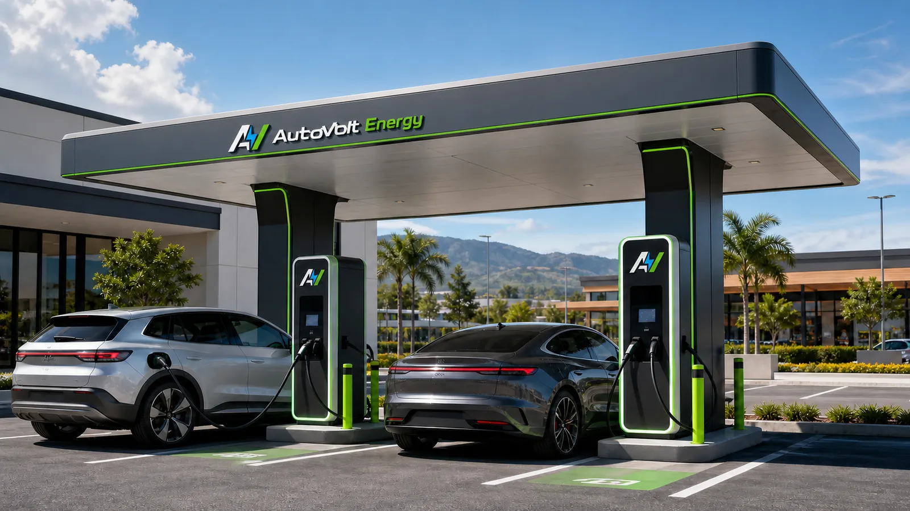

Espacio y conexión
Una pared o zona en tu sitio y un punto de conexión eléctrica AC monofásica —la misma de un toma común, con la capacidad suficiente para el número de puntos.
Estaciones de carga AC inteligentes para la micromovilidad de tu sitio. Tú pones el espacio y la conexión; AutoVolt evalúa, instala y opera —o te suministra el equipo si operas tú—. Cada usuario carga con su propio cargador y paga desde la app AutoVolt. La forma más fácil y económica de sumar carga a tu sitio.

Un modelo de anfitrión: evaluamos tu infraestructura eléctrica existente y, si el caso es viable, instalamos una estación de carga multi-toma con cobro por la app y liquidación pactada. ¿Prefieres operar tú? También te suministramos e instalamos el equipo.
Una pared o zona en tu sitio y un punto de conexión eléctrica AC monofásica —la misma de un toma común, con la capacidad suficiente para el número de puntos.
Definimos la estación de carga (de 2 a 20 tomas), la plataforma de cobro sobre OCPP, la operación, el mantenimiento y la liquidación en una propuesta ajustada al sitio.
Patinetas, scooters y motos eléctricas se cargan en AC con su propio cargador. Nosotros ponemos la toma inteligente donde tiene sentido.
Mensajería, restaurantes y apps de domicilio: una estación multi-toma carga varias motos a la vez, con control de consumo por conductor y menos tiempo muerto entre pedidos.
Alta densidad de micromovilidad. Una estación de tomas resuelve la carga del día sin ocupar espacio de parqueo de vehículos.
Complementa la carga de carros con puntos para patinetas, scooters y motos. Cobro individual por la app, sin que la copropiedad o la empresa administre nada.
Centros comerciales, terminales de transporte y zonas de alto flujo: un servicio útil para el visitante y un ingreso adicional para el sitio.
Menor inversión, mayor densidad y el mismo ecosistema de cobro que el resto de AutoVolt.
Es carga AC de la red común y un solo equipo atiende de 2 a 20 vehículos, sin la obra ni la infraestructura de un cargador rápido DC. Entras con poco y creces cuando quieras.
Bajo modelo anfitrión recibes una comisión sobre el ingreso neto; o adquieres el equipo y lo operas tú. Tú eliges cómo entrar.
Como consumen poco, la tarifa se configura por sesión, por hora o por kWh. La plataforma AutoVolt lo permite por sitio.
En el modelo anfitrión, cobros, soporte y mantenimiento los maneja AutoVolt. Tú recibes la liquidación acordada.
Los usuarios cargan, pagan y llevan el control desde la app AutoVolt que ya usan para carros. Un solo ecosistema sobre OCPP.
Si prefieres tener el equipo y quedarte con el 100% del ingreso, te traemos el hardware, lo instalamos y lo conectamos a la plataforma para que lo operes con tu cuenta.
Partimos de una evaluación real de demanda, capacidad e inversión antes de instalar.
Revisamos cuántos vehículos ligeros circulan, el espacio disponible y la capacidad de tu conexión eléctrica.
Definimos el número de tomas y la estación adecuada para tu sitio, instalamos y conectamos a la plataforma.
Los usuarios cargan y pagan por la app; en modelo anfitrión, recibes la liquidación definida en el contrato.
Cuéntanos dónde estás, cuántas patinetas, scooters o motos eléctricas esperas atender y la capacidad eléctrica disponible. Evaluamos el sitio y te explicamos si el modelo es viable y cuánto podría generar.
¿Buscas carga para carros eléctricos? Mira el modelo para hoteles y hospitales o para centros comerciales.
Lo que más preguntan sobre la carga de patinetas, scooters y motos eléctricas.
Solo tu propio cargador, el mismo que usas en casa. Las estaciones de AutoVolt son tomas de corriente AC inteligentes y medidas: enchufas tu cargador, inicias desde la app y pagas por la energía o el tiempo de uso. No necesitas ningún adaptador especial ni conector de vehículo.
Es de las opciones más económicas de habilitar, porque es carga AC y un solo equipo atiende varios vehículos a la vez —desde 2 hasta 20 tomas—. El costo exacto depende de la cantidad de puntos y del sitio. Bajo modelo anfitrión, AutoVolt puede asumir el equipo y la operación a cambio de una comisión; si prefieres operar tú, te suministramos e instalamos el equipo.
Como un scooter o una patineta consume muy poca energía, el cobro puede configurarse por tiempo de uso o por sesión, no solo por kilovatios-hora. La plataforma AutoVolt permite definir la tarifa que tenga sentido para cada sitio: por hora, por sesión o por energía.
Sí. Una estación multi-toma funciona como base de carga para flotas de e-motos de mensajería, restaurantes o apps de domicilio: varios vehículos cargan a la vez, con control de consumo por conductor y menos tiempo muerto. Lo dimensionamos según el tamaño de la flota y la capacidad eléctrica del sitio.